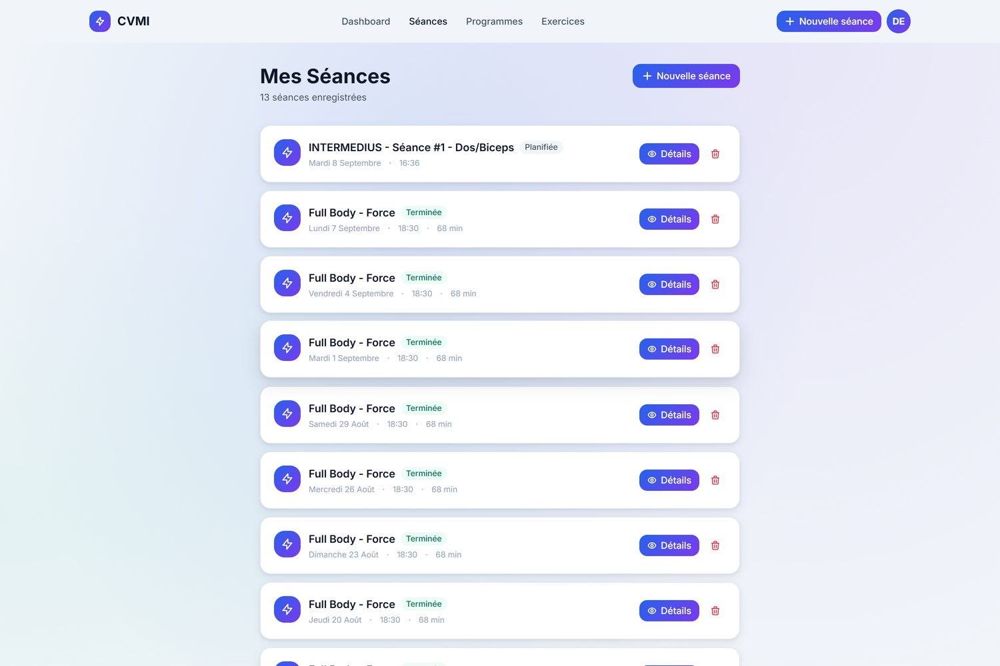
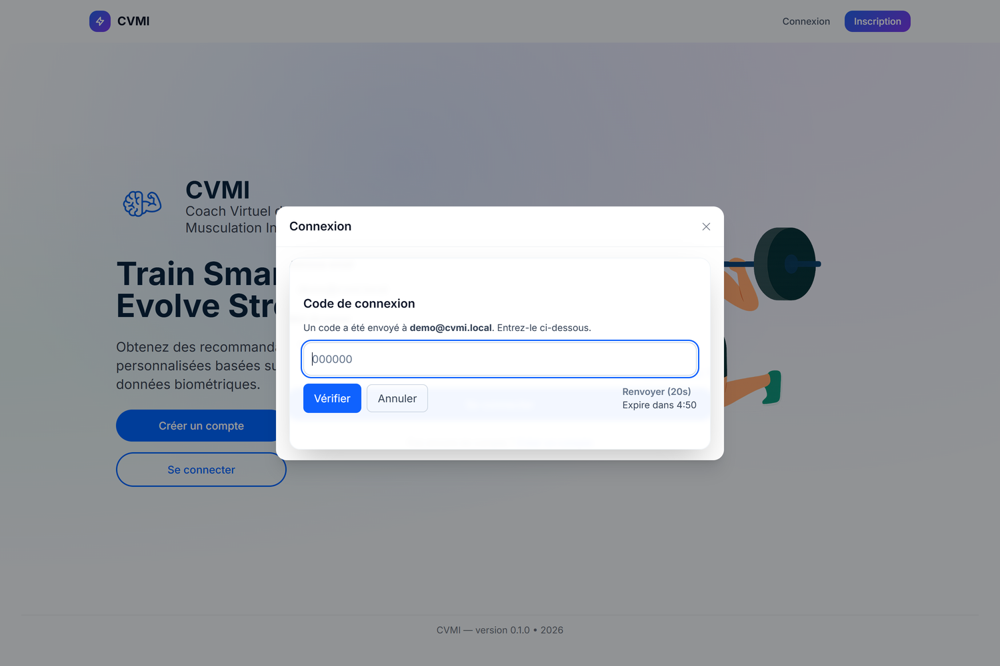

Une application de suivi et de coaching de musculation, avec une interface web et un client mobile développé pour Android et iOS. Je l'ai menée seul de bout en bout, du cahier des charges à la mise en production. Mon fil conducteur : pouvoir noter ses séries en salle, suivre sa progression et retrouver ses données malgré les coupures réseau.
Ce que j'ai construit
Un back-end NestJS découpé en modules métier — exercices, muscles, programmes, séances, performances — sur PostgreSQL avec TypeORM et des migrations versionnées. Cette API commune applique les règles métier et vérifie que chaque utilisateur accède uniquement à ses propres programmes, séances et performances.
Le web utilise Next.js et le mobile React Native avec Expo. Les deux clients vivent dans un monorepo npm, avec un package TypeScript commun pour les contrats métier, la validation et la charte graphique. Ils partagent les comptes et l'API, tout en gardant une interface et un stockage hors ligne adaptés à chaque plateforme.
Un coaching adapté à l'entraînement
En production, les recommandations reposent sur des règles métier explicables : objectif de force, d'hypertrophie ou de faible volume ; phase de prise de masse, de maintien ou de sèche ; historique et effort ressenti. Les charges proposées respectent aussi le matériel et les incréments disponibles dans la salle.
J'ai également intégré ONNX Runtime côté serveur et un pipeline d'entraînement pour expérimenter un modèle de recommandation. Cette voie reste optionnelle : le moteur actif pour les conseils par exercice est celui des règles métier.

Vue web du tableau de bord : le panneau de coaching synthétise les conseils d'ajustement de charge, de RPE et de repos à partir de l'historique.
Les séances, les supersets et la progression
Chaque série conserve sa charge, ses répétitions, son RPE et son repos. Un superset associe deux exercices : enregistrer A ouvre B sans récupération, puis enregistrer B lance le repos commun avant le tour suivant. Les paires sont sauvegardées dans la séance, y compris quand elle est suivie hors ligne.
L'historique détaillé par exercice permet de retrouver les anciennes séries et d'estimer un maximum, en tenant compte du poids de corps pour les mouvements concernés. Le mobile permet aussi de créer un exercice depuis le catalogue, un programme ou une séance. Le catalogue est partagé ; la modification et la suppression restent réservées aux administrateurs, avec protection des exercices système.

L'authentification, en détail
C'est la partie dont je suis le plus satisfait, parce que c'est celle où une erreur coûte le plus cher. Les mots de passe sont hachés avec Argon2. Les jetons JWT sont émis par paire, un access et un refresh. Le jeton de renouvellement est lui aussi stocké haché en base, puis consommé et remplacé dans une transaction lors de son utilisation.
La vérification d'e-mail est obligatoire avant le premier accès, la politique de mot de passe impose douze caractères avec majuscule, minuscule, chiffre et caractère spécial — validée en direct dans le formulaire — et le lien de réinitialisation expire au bout de trente minutes. Les origines autorisées en CORS sont déclarées explicitement, jamais ouvertes par défaut.
Quatre garde-fous que j'ai ajoutés parce qu'ils manquaient : une double authentification par code envoyé par e-mail à la connexion, un CAPTCHA à l'inscription pour limiter les créations automatisées, un historique des mots de passe pour empêcher la réutilisation d'un ancien, et une question de sécurité pour la récupération de compte.

Les sessions, appareil par appareil
Chaque connexion crée une session rattachée à un appareil. Le serveur en déduit le type de matériel, le navigateur et le système d'exploitation, et les conserve avec l'adresse IP et la date. L'utilisateur voit donc la liste de ses sessions ouvertes et peut en révoquer une à distance, sans toucher aux autres. C'est ce qu'on attend quand on s'est connecté depuis un téléphone prêté ou un poste partagé.
Le mode hors ligne
C'est la contrainte qui a le plus façonné l'application : dans une salle de sport, le réseau est souvent mauvais, et on ne peut pas demander à quelqu'un d'attendre le wifi pour noter une série. Les séances et les performances peuvent donc être enregistrées localement avant d'être synchronisées au retour du réseau.
Sur le web, le service worker gère les ressources de la PWA, tandis qu'IndexedDB conserve les données métier séparément pour chaque compte. Les réponses d'API privées ne sont pas mises en cache par le service worker. Sur mobile, SQLite conserve les données et la file d'attente ; les jetons sont enregistrés dans SecureStore.
Les écritures en attente sont préservées pendant la synchronisation. Des identifiants de création permettent au serveur de reconnaître une séance ou une série déjà acceptée si sa réponse s'est perdue, et d'éviter sa duplication lors d'une reprise. Le mobile retrouve le deuxième exercice d'un superset si le premier a été enregistré avant de fermer l'application. La création d'un nouvel exercice nécessite une connexion.
Une passerelle vers Healthboard
Une API dédiée permet à Healthboard de consulter les séances CVMI pour rapprocher entraînement et suivi santé. Son accès est limité au profil autorisé, avec une clé spécifique et une expiration. Le serveur MCP de Healthboard utilise cette lecture pour les assistants connectés, sans pouvoir modifier les séances ou les programmes CVMI.
Mise en production
Le web et l'API sont hébergés sur un VPS OVH avec Docker Compose : serveur Next.js, API NestJS, PostgreSQL et Nginx en reverse proxy. Un tunnel Cloudflare expose le site, tandis que les ports directs des services restent limités à la boucle locale. GitHub Actions sépare la validation et le déploiement ; SonarQube analyse la qualité du code sur un runner personnel. En développement, un serveur SMTP local intercepte les e-mails pour tester les parcours sans en envoyer à de vrais destinataires.
Les vérifications avant livraison
La CI vérifie les types, le lint, les tests unitaires et les tests de bout en bout de l'API. Jest couvre le backend ; Vitest couvre le code partagé, le web et le cœur mobile, notamment la reprise réseau et l'isolation des comptes. Elle contrôle aussi la compatibilité des dépendances Expo et génère les bundles Android et iOS.
Outils utilisés
TypeScript, NestJS, TypeORM, PostgreSQL, Next.js, React Native, Expo, TanStack Query, SQLite, SecureStore, Argon2, Jest, Vitest, Docker Compose, Nginx, Cloudflare Tunnel, GitHub Actions et SonarQube. ONNX Runtime pour l'expérimentation de modèles.